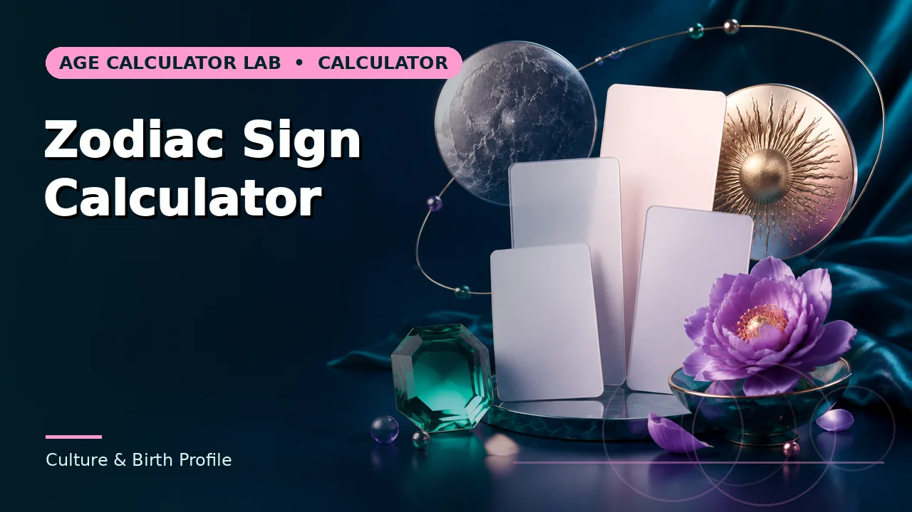

Quick answer
Look up the actual Lunar New Year date for the birth year. A birth-year lookup is wrong for roughly one birthday in nine.
Where the boundary falls
The Chinese New Year is set by a lunisolar calendar and falls between 21 January and 20 February, varying by more than a month between years. Anyone born before that date in a given Gregorian year belongs to the previous zodiac year.
That window covers roughly 30 days of every year, so about one birth in twelve is affected. A simple year-based lookup gets those wrong, and the person is usually told a different animal by family members who know the actual boundary.
Use this guide with the right tool: Open the Chinese Zodiac Calculator for Chinese zodiac animal associated with a birth year. If the question shifts, compare it with the Zodiac Sign Calculator or the Birth Year From Age Calculator.
The twelve-year cycle, and the sixty
The twelve animals — rat, ox, tiger, rabbit, dragon, snake, horse, goat, monkey, rooster, dog, pig — repeat on a twelve-year cycle. Less widely known outside the tradition is that they combine with five elements to give a sixty-year cycle, so a full repetition of animal and element takes sixty years.
That sixtieth-year return is culturally significant in several East Asian traditions, marking a completed cycle of life. It is why a sixtieth birthday carries particular weight in those cultures.
Regional variation
The Vietnamese zodiac substitutes the cat for the rabbit, and its new year occasionally falls a day apart from the Chinese one because of differing time-zone calculations. Some other regional traditions vary the animals or the boundary further.
So there is no single correct answer to "what animal is this year" without saying which tradition. For a family record, the tradition being followed matters as much as the date.
Using it
This is a cultural reference and a matter of identity and tradition rather than a measurement. It is used in celebration, in naming, in gift-giving and in conversation, and it has real social significance in many communities.
What a date-only calculator can do is apply the boundary correctly. What it cannot do is decide which regional tradition applies to a particular family, which is a question for the family.
Worked example
Try it with the dates in front of you. Where the answer sits close to a threshold, treat that as a prompt to check the rule rather than to conclude.
Common mistakes to avoid
- Using 1 January as the boundary. The animal changes at Lunar New Year, which falls between 21 January and 20 February.
- Assuming one tradition covers all regions. The Vietnamese zodiac uses the cat rather than the rabbit, and boundaries can differ by a day.
- Confusing this with the Western zodiac. One is an annual cycle of twelve years; the other divides a single year into twelve. They are unrelated systems.
Use the right calculator
Three tools cover most of what this guide describes. Each shows its working, so a result can be checked rather than trusted.


Frequently asked questions
Why does the date move so much?
It follows a lunisolar calendar, so the new year falls on a different Gregorian date each year within a month-wide window.
What is the sixty-year cycle?
The twelve animals combine with five elements, so a full animal-and-element repetition takes sixty years — which is why a sixtieth birthday is significant in several traditions.
Which animal am I if I was born in January?
Look up the Lunar New Year date for your birth year. If you were born before it, you belong to the previous animal.